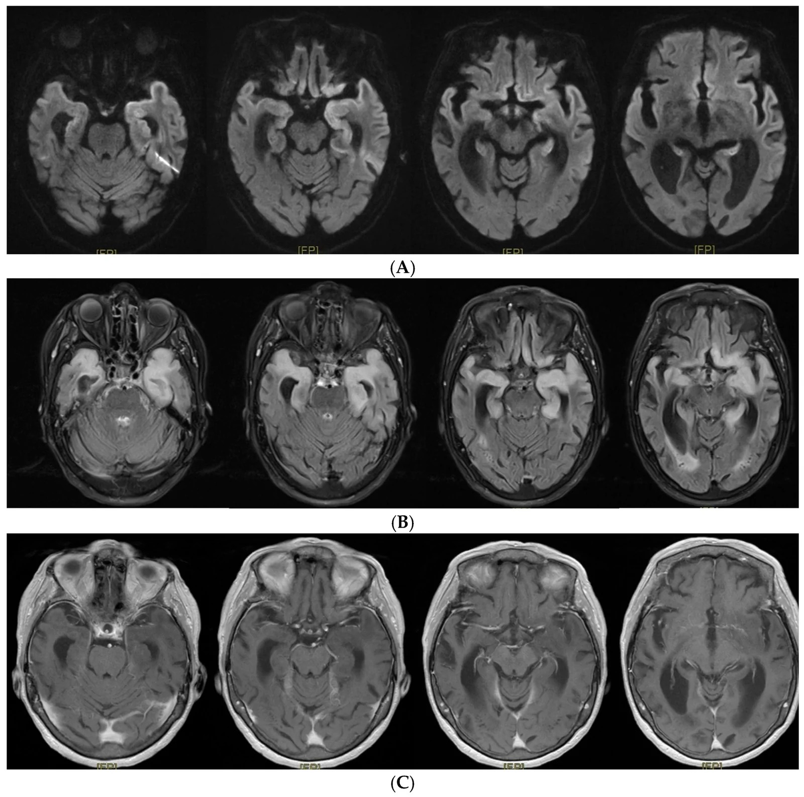
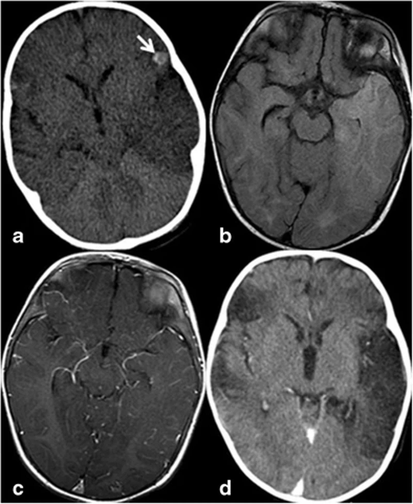

6177 — Viêm não do herpes simplex (HSE) ở trẻ: đọc MRI TRƯỚC khi T2 rõ và không chờ PCR
Tags: pattern:viem-nao-thai-duong pattern:han-che-khuếch-tán pattern:xuat-huyet-diem pattern:mot-ben vung:nao vung:nao-that protocol:MRI-so-nao protocol:DWI-ADC protocol:SWI incidentaloma:khong
Mức chắc chắn (certainty): tổng hợp y văn (literature synthesis) — ghép đoàn hệ 17 năm/58 trẻ viêm não cấp ở PICU (BMC Pediatr 2026, PMCID PMC13617808, CC BY-NC-ND 4.0), nghiên cứu toàn quốc 6.788 ca HSE (J Epidemiol 2026, PMCID PMC13349789, CC BY 4.0), ca người lớn 85 tuổi có dịch não tủy KHÔNG tăng tế bào (J Clin Med 2026, PMCID PMC13565770, CC BY 4.0). Không có ca do nhóm tự chụp.
Câu chốt: trẻ sốt + co giật + thay đổi hành vi/ý thức, hình ảnh vỏ thuỳ thái dương trong – đảo – trán dưới, HAI BÊN nhưng không đối xứng, hạn chế khuếch tán, không theo lãnh thổ mạch, giữ nguyên nhân bền (basal ganglia) = HSE cho tới khi chứng minh khác. Ba con số định khung: CT chỉ bất thường 46,0% trong khi MRI 76,1% (PMC13617808), tử vong nội viện 6,0% dù đã dùng acyclovir (PMC13349789), và tử vong 20,7% ở trẻ viêm não cấp nằm PICU (PMC13617808). Acyclovir phải bắt đầu trước khi có MRI/PCR.
1. Tổng quan bệnh học – cơ chế hình ảnh (TẠI SAO)
1.1. Đường vào và vì sao tổn thương chọn thuỳ thái dương – đảo
- HSV-1 lây qua đường mũi → hành khứu → vỏ não khứu/trán dưới → lan theo đường rãnh, sợi trục và lan dịch não tủy tới thuỳ thái dương trong (hồi hải mã, hạch hạnh nhân) và đảo. Vì vậy mẫu hình không theo lãnh thổ mạch và hay gặp hai bên, lệch một bên — đây là điểm khác cốt lõi với nhồi máu não.
- TẠI SAO DWI sáng sớm hơn T2: virus gây phù độc tế bào (cytotoxic edema) — nước vào trong tế bào → ADC giảm, DWI sáng trong 24–48 giờ đầu; T2/FLAIR chỉ sáng rõ khi phù đủ lớn (thường chậm hơn 1–2 ngày). Đó là lý do MRI âm tính ngày 1 không loại trừ, và phải chụp lại 48–72 giờ nếu bệnh cảnh tiếp tục.
- TẠI SAO có máu: HSV gây viêm hoại tử xuất huyết ở vỏ thái dương — xuất huyết dạng chấm (petechial) làm tăng tỷ trọng trên CT không cản quang (ảnh mục 6, mũi tên) và blooming trên SWI; không phải máu tụ.
- TẠI SAO để lại di chứng: hoại tử vỏ + phù lan → teo não, não mềm hóa (encephalomalacia) sau vài tuần; trẻ có thể động kinh kháng trị và suy giảm trí nhớ/ngôn ngữ.
1.2. Vì sao CT "bình thường" vẫn phải MRI — vật lý và số liệu
- CT chỉ thấy vùng giảm tỷ trọng khi phù đủ lớn (giảm 2–5 HU khó thấy ở trẻ có nhu mô nhiều nước) và chỉ thấy máu khi đã có xuất huyết; vì vậy trong đoàn hệ nhi, CT bất thường 23/50 = 46,0%, còn MRI bất thường 35/46 = 76,1% (PMC13617808).
- MRI là chốt vì cùng một lúc trả lời 4 câu: (1) có hạn chế khuếch tán thật? (2) có xuất huyết? (3) có lan thân não/đối bên? (4) có khối choán chỗ khác (u, áp-xe) không?
- TẠI SAO không chờ PCR: PCR HSV trong dịch não tủy có thể âm tính trong 72 giờ đầu và dịch não tủy có thể KHÔNG tăng tế bào (ca 85 tuổi trong PMC13565770 — chẩn đoán suýt bị bỏ vì "dịch trong"); trong đoàn hệ nhi, PCR HSV dương chỉ 6/56 (10,7%) mẫu vì nhiều ca không lấy được dịch/đã qua giai đoạn.
1.3. Ngưỡng định lượng nằm lòng
| Đại lượng | Số liệu | Nguồn |
|---|---|---|
| Trẻ viêm não cấp nằm PICU (17 năm) | 58/2.240 = 2,6%; trung bình 3,4 ca/năm | PMC13617808 |
| MRI bất thường vs CT bất thường | 76,1% (35/46) vs 46,0% (23/50) | PMC13617808 |
| Triệu chứng: co giật / rối loạn ý thức / sốt / hôn mê / động kinh liên tục | 82,8% / 69,0% / 82,8% / 53,4% / 23,9% | PMC13617808 |
| Tử vong / di chứng thần kinh ở trẻ sống | 20,7% (12/58) / 19,6% (9/46) | PMC13617808 |
| Acyclovir theo kinh nghiệm (đoàn hệ) | 86,2% (50/58), trung vị 6 ngày | PMC13617808 |
| Dịch não tủy: tăng tế bào / protein > 0,4 g/L | ngưỡng tăng tế bào > 10 tế bào/µL; protein tăng 24,5% | PMC13617808 |
| HSE toàn quốc (Nhật, 2010–2023) | 6.788 ca; 5,7–8,2/100.000 ca nhập viện | PMC13349789 |
| Tử vong nội viện HSE / kết cục xấu (chết hoặc rối loạn ý thức) | 6,0% / 29,6% | PMC13349789 |
| Di chứng chức năng ở người sống | Barthel ≤ 90: 36,0%; rối loạn ý thức: 25,1% | PMC13349789 |
| Thời gian acyclovir (khi dùng) | trung vị 10 ngày (IQR 6–15) | PMC13349789 |
| Tử vong cấp HSE dù điều trị (y văn) | 5–20% | PMC13349789 (phần bàn luận) |
- Chưa rõ — cần tra: không có ngưỡng ADC (×10⁻⁶ mm²/s) hay ngưỡng thể tích tổn thương được thẩm định cho HSE; phân tầng dựa vào ý thức, động kinh liên tục, tổn thương hai bên/thân não, không dựa vào một con số trên ảnh.
2. Mẫu hình + chẩn đoán phân biệt theo vị trí (Gamut)
- Thái dương trong + đảo + trán dưới, hai bên lệch: HSE; viêm não tự miễn/limbic (không sốt, kháng thể); u thần kinh đệm cấp thấp (không sốt, không hạn chế khuếch tán mạnh, ngấm thuốc); trạng thái động kinh (phù vỏ thoáng qua sau cơn).
- Đồi thị hai bên đối xứng: ANE (bài 6169), CVST, HIE, hạ đường huyết — không phải HSE điển hình.
- Vỏ não sau/chẩm–đỉnh hai bên: PRES (bài 653), tăng huyết áp/thuốc.
- Chất trắng, nhiều ổ, không theo vỏ: ADEM; viêm màng não–não do enterovirus.
- Ổ viền ngấm thuốc + hạn chế khuếch tán trung tâm: áp-xe não (bài 236).
- Một bên, theo lãnh thổ mạch, có/không xuất huyết, không sốt: nhồi máu MCA — HSE hiếm khi tôn trọng ranh giới mạch và thường có sốt + co giật.
- Gợi nhớ HSE = Hippocampus/insula, Seizure + fever, Edema–restricted diffusion.
3. Bảng so sánh phân biệt (ma trận đối chiếu)
| Thực thể (entity) | Hình ảnh điển hình (CT/MRI) | Chốt vào (rule-in) | Chốt loại (rule-out) | Gợi ý xác nhận |
|---|---|---|---|---|
| HSE | Vỏ thái dương trong + đảo + trán dưới, hai bên lệch, DWI sáng/ADC thấp, xuất huyết chấm, giữ nguyên thể vân | Sốt + co giật + thay đổi hành vi; MRI 76,1% bất thường dù CT chỉ 46,0% | Tổn thương đồi thị hai bên đối xứng → nghĩ ANE; một ổ viền ngấm → áp-xe | MRI DWI/FLAIR + SWI; PCR HSV (có thể âm 72 giờ đầu); acyclovir ngay |
| ANE do cúm (6169) | Đồi thị hai bên, thân não, chất trắng quanh não thất; dấu ba lớp | Đồi thị hai bên + sốt + transaminase tăng, ammonia bình thường | Tổn thương thái dương–đảo một bên → HSE | MRI lặp 48–72 giờ; PCR cúm |
| Nhồi máu MCA | Vỏ + chất trắng theo lãnh thổ, bờ rõ, không sốt | Khởi phát đột ngột, khuyết thiếu thần kinh khu trú, mạch máu tắc trên MRA | Tổn thương hai bên thái dương trong hoặc có sốt → không điển hình | MRA/CTA, siêu âm tim nếu trẻ |
| Trạng thái động kinh (phù sau cơn) | Vỏ não hạn chế khuếch tán thoáng qua đúng vùng khởi phát, có thể tăng tín hiệu T2 nhẹ | Cơn được ghi trên EEG ngay trước đó; tổn thương giảm dần sau 48–72 giờ | Tồn tại > 1 tuần, có xuất huyết, teo vỏ → không phải phù sau cơn | EEG + MRI lặp; đừng mặc định "HSE" |
| Viêm não tự miễn/limbic | Hai bên thái dương trong, không xuất huyết, teo hải mã muộn | Thay đổi hành vi ± động kinh, không sốt, kháng thể (anti-NMDAR, anti-LGI1) | Có sốt cao + xuất huyết → nghi HSE trước | Kháng thể huyết thanh/dịch não tủy; EEG |
| PRES (653) | Vỏ chẩm–đỉnh hai bên, phù mạch, không hạn chế khuếch tán mạnh | Tăng huyết áp/thuốc ức chế miễn dịch/suy thận, đau đầu, mờ mắt | Thái dương trong + đảo → không phải PRES | MRI, kiểm soát huyết áp |
| Áp-xe não (236) | Ổ dịch viền ngấm thuốc, DWI hạn chế ở trung tâm ổ, phù quanh | Sốt + tăng áp lực nội sọ + ổ viền; nguồn tai xoang/răng | Tổn thương vỏ não lan theo rãnh, không tạo ổ → HSE | CT/MRI cản quang, cấy; dẫn lưu nếu ổ lớn |
| ADEM | Chất trắng nhiều ổ, không đối xứng, có thể đồi thị | Sau nhiễm/vaccine 1–3 tuần, nhiều ổ, không sốt cao | Tổn thương vỏ đơn thuần → không phải ADEM | MRI sọ + tủy, kháng thể MOG |

Ca người lớn 85 tuổi (minh hoạ mẫu hình, không phải trẻ): (A) DWI — hạn chế khuếch tán vỏ thái dương, đảo, trán dưới và hồi đai hai bên, ưu thế trái; (B) FLAIR — tăng tín hiệu tương ứng hồi hải mã, hạch hạnh nhân, vỏ não khứu; (C) T1 sau tiêm — không ngấm thuốc bệnh lý. Ảnh nguyên bản, không crop. Nguồn: J Clin Med 2026, PMCID PMC13565770, CC BY 4.0.4. Protocol chụp + phân tầng xử trí
4.1. Thứ tự hành động (không chờ hình ảnh)
- Acyclovir tĩnh mạch NGAY khi nghi HSE (sốt + co giật + thay đổi hành vi/ý thức): 10 mg/kg mỗi 8 giờ (trẻ ≥ 12 tuổi/người lớn) hoặc 20 mg/kg mỗi 8 giờ ở trẻ nhỏ theo nhiều phác đồ — đối chiếu phác đồ địa phương; thời gian 14–21 ngày (tối thiểu 14 ngày, 21 ngày nếu còn suy giảm ý thức/PCR còn dương).
- CT sọ không cản quang chỉ khi: dấu tăng áp lực nội sọ, chấn thương, hoặc không có MRI trong 24 giờ. CT bình thường KHÔNG loại trừ (chỉ 46,0% bất thường).
- MRI sọ ≤ 24 giờ: DWI + ADC + FLAIR + T2 + T1 sau tiêm + SWI, lát mỏng coronal qua hải mã; đọc theo thứ tự: vỏ thái dương trong → đảo → trán dưới → hồi đai → thể vân (phải giữ nguyên) → đối bên.
- Chọc dò dịch não tủy sau khi loại trừ tăng áp lực nội sọ: tế bào, protein, glucose, PCR HSV, PCR enterovirus; lặp PCR sau 72 giờ nếu lần đầu âm mà hình ảnh/lâm sàng điển hình.
- EEG khi có rối loạn ý thức kéo dài hoặc nghi động kinh không co giật.
- MRI lặp sau 48–72 giờ nếu lần đầu bình thường; 1–3 tháng để đánh giá teo/não mềm hóa và tiên lượng.
flowchart TD
A[Trẻ sốt + co giật + thay đổi hành vi hoặc ý thức] --> B[Acyclovir TM NGAY + ABC + chống co giật]
B --> C{Có dấu tăng áp lực nội sọ hoặc không có MRI trong 24 giờ?}
C -->|Có| D[CT sọ không cản quang]
C -->|Không| E[MRI: DWI/ADC + FLAIR + T1 sau tiêm + SWI]
D --> E
E --> F{Vỏ thái dương trong và đảo, hai bên lệch, hạn chế khuếch tán?}
F -->|Có| G[HSE: tiếp tục acyclovir 14-21 ngày + chọc dò dịch não tủy + PCR HSV]
F -->|Không| H{Đồi thị hai bên đối xứng?}
H -->|Có| I[ANE: xem bài 6169]
H -->|Không| J{Chất trắng nhiều ổ hoặc vỏ chẩm-đỉnh?}
J -->|Chất trắng| K[ADEM]
J -->|Vỏ chẩm-đỉnh| L[PRES: xem bài 653]
G --> M{PCR HSV dương?}
M -->|Có| N[Đủ 14-21 ngày, lặp dịch não tủy nếu còn triệu chứng]
M -->|Không nhưng MRI điển hình| N
M -->|Không và MRI không điển hình| O[Xem lại chẩn đoán, cân nhắc ngừng acyclovir]
N --> P[MRI lặp 48-72 giờ và 1-3 tháng]
4.2. Phân tầng và điều trị
| Mức | Lâm sàng – hình ảnh | Xử trí |
|---|---|---|
| Nghi HSE, chưa có kết quả | Sốt + co giật + thay đổi hành vi, MRI chưa làm | Acyclovir ngay, không chờ PCR/MRI |
| HSE xác định/điển hình | MRI thái dương–đảo + PCR dương hoặc MRI điển hình | Acyclovir 14–21 ngày; chống co giật; theo dõi Na⁺/chức năng thận (độc thận của acyclovir) |
| HSE nặng | Hôn mê, tổn thương hai bên/thân não, động kinh liên tục | ICU, EEG liên tục, chống phù não; mổ giải áp khi thoát vị (bài học từ ca nhi trong PMC12640269) |
| Sau HSE | Teo hải mã, động kinh muộn, chậm phát triển | Phục hồi chức năng, theo dõi động kinh, cảnh giác viêm não anti-NMDAR sau HSE (thay đổi hành vi trở lại sau giai đoạn ổn định) |
- Không có thang điểm hình ảnh cho HSE; quyết định dựa vào mức ý thức + động kinh liên tục + lan hai bên/thân não, không dựa vào kích thước ổ.
5. Biến thể bình thường và cạm bẫy
- Cạm bẫy 1 — "CT bình thường": 54% trẻ viêm não có CT bình thường (PMC13617808); không dừng chẩn đoán.
- Cạm bẫy 2 — "dịch não tủy trong thì không phải viêm não": ca 85 tuổi có không tăng tế bào, không CRP mà vẫn HSE (PMC13565770); protein tăng chỉ 24,5% trong đoàn hệ nhi.
- Cạm bẫy 3 — PCR âm tính sớm: PCR có thể âm trong 72 giờ đầu; âm một lần không đủ để ngừng acyclovir khi MRI điển hình.
- Cạm bẫy 4 — "một bên nên không phải HSE": HSE thường hai bên nhưng lệch; tổn thương một bên hoàn toàn có thể gặp ở giai đoạn sớm.
- Cạm bẫy 5 — phù vỏ sau cơn động kinh: hạn chế khuếch tán thoáng qua 48–72 giờ, đúng vùng ổ khởi phát, không xuất huyết → không mặc định HSE; cần EEG.
- Cạm bẫy 6 — thể vân bị tổn thương: HSE điển hình giữ nguyên thể vân; nếu đồi thị/thể vân hai bên đối xứng → nghĩ ANE hoặc bệnh chuyển hóa.
- Cạm bẫy 7 — teo não muộn bị đọc là "tổn thương mới": sau 1–3 tháng, não mềm hóa + teo là di chứng, không phải tái phát; so chuỗi phim.
- Cạm bẫy 8 — hội chứng anti-NMDAR sau HSE: trẻ hồi phục rồi thay đổi hành vi, cử động bất thường, co giật lại → không phải "tái phát HSE" mà là viêm não tự miễn sau nhiễm; cần kháng thể và điều trị miễn dịch.

Ca minh hoạ trong đoàn hệ nhi (trẻ 7 tháng): (a) CT không cản quang — giảm tỷ trọng thuỳ thái dương trái rõ, phải nhẹ, ổ tăng tỷ trọng ở trán trái (mũi tên) = xuất huyết chấm; (b) FLAIR — tăng tín hiệu hai thuỳ thái dương, trái > phải; (c) T1 sau tiêm — ngấm thuốc màng mềm lan toả; (d) CT muộn — não mềm hóa và mất thể tích hai bên thái dương–trán. Ảnh nguyên bản 4 panel, không crop. Nguồn: BMC Pediatr 2026, PMCID PMC13617808, CC BY-NC-ND 4.0.6. Tự lượng giá — Blind Quiz
Ca 1 — Bé 7 tháng, sốt 2 ngày, co giật nửa người phải, li bì. CT sọ không cản quang tại tuyến đầu:
- Hỏi: (1) Dấu hiệu nào trên CT gợi HSE? (2) Vì sao phải MRI? (3) Bắt đầu thuốc gì, trước hay sau khi có PCR?
Bấm để hiện đáp án (findings + chẩn đoán)
- CT: giảm tỷ trọng thuỳ thái dương trái rõ + phải nhẹ, ổ tăng tỷ trọng trán trái = xuất huyết chấm — mẫu hình HSE.
- Vì sao MRI: CT chỉ bất thường 46,0%, MRI 76,1%; MRI xác định vỏ thái dương–đảo, hai bên, hạn chế khuếch tán, loại trừ áp-xe/nhồi máu.
- Thuốc: acyclovir tĩnh mạch NGAY (10 mg/kg mỗi 8 giờ; trẻ nhỏ 20 mg/kg theo phác đồ) — trước PCR, không chờ.
- Bước tiếp: chọc dò dịch não tủy sau khi loại trừ tăng áp lực nội sọ, EEG, MRI lặp 48–72 giờ nếu cần.
- Nguồn ảnh: BMC Pediatr 2026, PMCID PMC13617808, CC BY-NC-ND 4.0.
Ca 2 — Bé 3 tuổi, động kinh co giật–co cứng liên tục 40 phút, sau cơn vẫn lơ mơ. MRI 6 giờ sau cơn: hạn chế khuếch tán vỏ hải mã phải, không xuất huyết; MRI lặp 72 giờ: gần như bình thường.
- Hỏi: đây là HSE hay phù sau cơn? Có cần acyclovir 14–21 ngày không?
Bấm để hiện đáp án
- Chẩn đoán: phù vỏ sau trạng thái động kinh (post-ictal cortical change) — hạn chế khuếch tán thoáng qua 48–72 giờ, đúng vùng ổ khởi phát, không xuất huyết, không lan đảo/trán dưới.
- Vì sao không phải HSE: tổn thương mất dần trên MRI lặp; HSE thường tồn tại và tiến triển (phù, xuất huyết, teo muộn).
- Xử trí: vẫn bắt đầu acyclovir cho tới khi loại trừ (an toàn), nhưng ngừng sớm khi MRI lặp bình thường + PCR âm; điều trị chính là kiểm soát cơn.
- Nguồn số liệu: PMC13617808 (CT 46,0% / MRI 76,1%).
Ca 3 — Bé 10 tuổi, sốt, nói nhảm, co giật một cơn. Dịch não tủy: 3 tế bào/µL, protein 0,52 g/L; PCR HSV ngày 1 âm tính. MRI: tăng tín hiệu FLAIR + hạn chế khuếch tán hồi hải mã và đảo TRÁI.
- Hỏi: có ngừng acyclovir vì PCR âm + dịch não tủy "trong" không?
Bấm để hiện đáp án
- KHÔNG ngừng: PCR có thể âm trong 72 giờ đầu; dịch não tủy có thể không tăng tế bào (ca PMC13565770) và protein chỉ tăng ở 24,5% trẻ.
- Chẩn đoán: HSE dựa trên MRI điển hình (thái dương trong + đảo, hạn chế khuếch tán); làm PCR lặp ngày 4–7.
- Điều trị: đủ 14–21 ngày acyclovir; theo dõi chức năng thận, Na⁺; không dùng corticoid thường quy.
- Nguồn: PMC13349789, PMC13565770, PMC13617808.
Bài liên quan chéo
- 6169 – Bệnh não do cúm (ANE) ở trẻ (đồi thị hai bên đối xứng — hàng phân biệt chính)
- 653 – PRES/RCVS ở trẻ (phù vỏ chẩm–đỉnh hai bên)
- 236 – Viêm tai xương chũm biến chứng nội sọ (áp-xe não/tụ mủ — ổ viền ngấm thuốc, đường vào từ tai)
- 3101 – Hội chứng CHANTER sau opioid (tổn thương hai bên sau thuốc)
- 3062 – Viêm màng não tái diễn ở trẻ có dị tật tai trong (nhiễm trùng thần kinh trung ương đường vào từ tai)
- 212 – Xuất huyết sọ não (loại trừ máu tụ trên CT)
Ảnh
6177_viem-nao-hsv_CT-MRI_PMC13617808-F5.jpg— 4 panel CT/FLAIR/T1+C/CT muộn ở nhũ nhi 7 tháng; BMC Pediatr 2026, PMCID PMC13617808, CC BY-NC-ND 4.0.6177_viem-nao-hsv_DWI-FLAIR_PMC13565770-F2.jpg— DWI/FLAIR/T1+C ở người lớn 85 tuổi (minh hoạ mẫu hình); J Clin Med 2026, PMCID PMC13565770, CC BY 4.0.- Chi tiết nguồn, giấy phép, phái sinh:
images/CREDITS.md; link bài gốc:sources.md.
Không dùng để chẩn đoán độc lập khi chưa có người hướng dẫn.